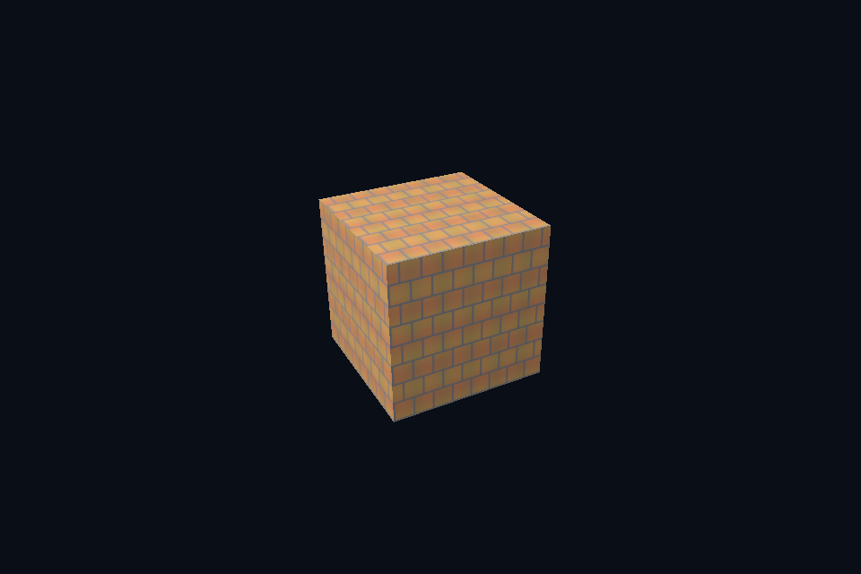

dx19_texture_lod · 多级纹理采样
54 课目录
目的与实际执行
SRV 的 MostDetailedMip/MipLevels 与 static sampler 的 LOD 范围共同生效。descriptor 不生成图像；正确 GPU mip 链的上传/生成结果仍需先验证。
本程序有独立实验选择与验证路径，公共实现集中在 advanced_labs.cpp。设备/API 检查、数值 compute 与图形渲染采用不同证据；不是每个程序都会弹出窗口。
构建和运行
cmake --preset dx12
cmake --build --preset dx12-debug --target dx19_texture_lod --parallel 4
.\DirectX12\build\bin\Debug\dx19_texture_lod.exe
深入学习：数据、接口与执行
本课的真实源码切片
来自 DirectX12/common/advanced_labs.cpp，第 391—434 行；这是现有实现的局部摘录，末尾可能处于函数中间，不是可单独编译的完整程序。
void attach(DxScene& scene, bool lastMip = false) {
D3D12_SHADER_RESOURCE_VIEW_DESC srv{};
srv.Format = viewFormat;
srv.ViewDimension = D3D12_SRV_DIMENSION_TEXTURE2D;
srv.Shader4ComponentMapping = D3D12_DEFAULT_SHADER_4_COMPONENT_MAPPING;
srv.Texture2D.MostDetailedMip = lastMip ? UINT(reference.size() - 1) : 0;
srv.Texture2D.MipLevels = lastMip ? 1 : UINT(reference.size());
c.device->CreateShaderResourceView(
texture.Get(), &srv, scene.srvHeap->GetCPUDescriptorHandleForHeapStart());
}
void verify() {
auto desc = texture->GetDesc();
UINT levels = UINT(reference.size());
std::vector<D3D12_PLACED_SUBRESOURCE_FOOTPRINT> footprints(levels);
UINT64 total{};
c.device->GetCopyableFootprints(
&desc, 0, levels, 0, footprints.data(), nullptr, nullptr, &total);
auto readback = c.buffer(total, D3D12_HEAP_TYPE_READBACK, D3D12_RESOURCE_STATE_COPY_DEST);
c.begin();
auto b = transition(texture.Get(),
D3D12_RESOURCE_STATE_PIXEL_SHADER_RESOURCE,
D3D12_RESOURCE_STATE_COPY_SOURCE);
c.cmd->ResourceBarrier(1, &b);
for (UINT level = 0; level < levels; ++level) {
D3D12_TEXTURE_COPY_LOCATION src{}, dst{};
src.pResource = texture.Get();
src.Type = D3D12_TEXTURE_COPY_TYPE_SUBRESOURCE_INDEX;
src.SubresourceIndex = level;
dst.pResource = readback.Get();
dst.Type = D3D12_TEXTURE_COPY_TYPE_PLACED_FOOTPRINT;
dst.PlacedFootprint = footprints[level];
c.cmd->CopyTextureRegion(&dst, 0, 0, 0, &src, nullptr);
}
b = transition(texture.Get(),
D3D12_RESOURCE_STATE_COPY_SOURCE,
D3D12_RESOURCE_STATE_PIXEL_SHADER_RESOURCE);
c.cmd->ResourceBarrier(1, &b);
c.submit();
void* p{};
D3D12_RANGE range{0, SIZE_T(total)};
dxCheck(readback->Map(0, &range, &p));
for (UINT level = 0; level < levels; ++level)
for (UINT y = 0; y < reference[level].height; ++y) {
auto* row = static_cast<uint8_t*>(p) + footprints[level].Offset +
同主题跨 API 导航
先预测，再验证
固定相机观察远处小物体，比较单级、完整 mip 与末级 view，并记录哪些差异来自范围、哪些来自过滤。
参考推导：末级 view 强制只见低分辨率平均图；完整 mip 按采样尺度选择；单级可能高频闪烁。不能把三者都解释为“纹理没加载”。
验证与边界
运行 --smoke 执行有限自动检查。数值实验读取实际 GPU 结果，图形实验检查非空图像并可查看读回。交互重建与性能还需额外证据；窗口 renderer 当前保留串行等待，双槽计算实验不会被描述为完整多帧呈现引擎。
实际画面
